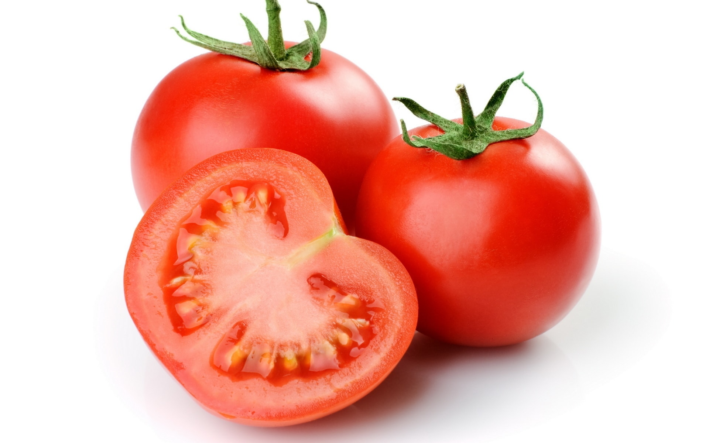

टमाटर है हेल्थ का डॉक्टर, इसे खाने के हैं ये 5 जबरदस्त BENIFITS ------
_____________________________________________________
टमाटर खाइए सेहत बनाइए। जी हां टमाटर कोई साधारण सब्जी नहीं बल्कि हेल्थ का डॉक्टर है। टमाटर में प्रोटीन, विटामिन, वसा आदि तत्व विद्यमान होते हैं। यह सेवफल व संतरा दोनों के गुणों से युक्त होता है। कार्बोहाइड्रेट की मात्रा कम होती है इसके अलावा भी टमाटर खाने से कई लाभ होते हैं। पौष्टिक तत्वों से भरपूर टमाटर यूं तो हर मौसम में फायदेमंद है, लेकिन इसमें मौजूद विटामिन ए और सी इसकी उपयोगिता को और महत्वपूर्ण बना देते हैं।
आप चाहे इसे सब्जी में डालें या सलाद के रूप में या किसी और रूप में, यह आपके लिए बेहद फायदेमंद साबित होगा। इसमें लोह तत्व की मात्रा दूध की अपेक्षा दुगुनी और अण्डे की अपेक्षा पांच गुनी होती है।
विटामिन ए, बी, सी, के अतिरिक्त इसमें पोटाश, सोडियम चूना, व तांबा भी पाए जाते हैं। लोह तत्व की दृष्टि से अन्य सभी फलों में सर्वश्रेष्ठ होता है। खून की कमी दूर कर शरीर को पुष्ट, सुडौल, और फुर्तीला रखने के लिए इसका सेवन उत्तम है।आइए, जानें टमाटर के फायदे
माना जाता है कि टमाटर इतने पौष्टिक होते हैं कि सुबह नाश्ते में केवल दो टमाटर संपूर्ण भोजन के बराबर होते हैं इनसे आपके वजन में जरा भी वृद्धि नहीं होगी इसके साथ-साथ यह पूरे शरीर के छोटे-मोटे विकारों को दूर करता है इसमें लोह तत्व की मात्रा दूध की अपेक्षा दुगुनी और अण्डे की अपेक्षा पांच गुनी होती है। विटामिन ए, बी, सी, के अतिरिक्त इसमें पोटाश, सोडियम चूना, व तांबा भी पाए जाते हैं। लोह तत्व की दृष्टि से अन्य सभी फलों में सर्वश्रेष्ठ होता है। खून की कमी दूर कर शरीर को पुष्ट, सुडौल, और फुर्तीला रखने के लिए इसका सेवन उत्तम है।
दस्त साफ और दांत व मसुड़ों की खराबी व कमजोरी दूर करने और शरीर की निर्बलता दूर करने के लिए इसका नियमित सेवन किया जाना चाहिए। बच्चों में सूखारोग को दूर करने के लिए पके लाल टमाटर का रस ही बच्चों को पिलाना बहुत लाभदायक है। सुबह खाली पेट पके हुए 3-4 टमाटर कच्चे ही खाना या इनका रस पीना और बाद में एक घंटे तक कुछ ना खाना पीना इसे सेवन करने का अच्छा तरीका है। खाने से पहले पके लाल टमाटर काटकर इन पर सेंधा नमक व कालीमिर्च बारीक कतरी हुई अदरक के साथ लें फिर भोजन करें। इसके नियमित सेवन से मुंह के छाले ठीक हो जाते हैं।
पेट के रोग, मूत्र विकार, मधुमेह और आंखों की कमजोरी आदि रोग टमाटर के सेवन से दूर होते हैं। छोटे बच्चों को टमाटर का रस अवश्य पिलाना चाहिए ताकि उनके शरीर का पूरा विकास हो सके। गर्भवती स्त्री और बूढ़े लोगों को भी नियमित सुबह सेवन करना टानिक का काम करेगा।
टमाटर के गूदे में दूध व नींबू का रस मिलाकर चेहरे पर लगाने से चेहरे पर चमक आती है। टमाटर जवां दिखेंगे यह झुर्रियों को कम करता है और रोम छिद्रों को बड़ा करता है। इसके लिए टमाटर और शहद के मिश्रण वाला फेस पैक इस्तेमाल करें। टमाटर के छिलके और बीज को निकाल दें। टमाटर सिर्फ एक सब्जी नहीं बल्कि ये अपने आप में एक संपूर्ण औषधी है आइए जाने कैसे? इसके सेवन से रोग प्रतिरोधक क्षमता भी बढ़ती है। टमाटर से पाचन शक्ति बढ़ती है।